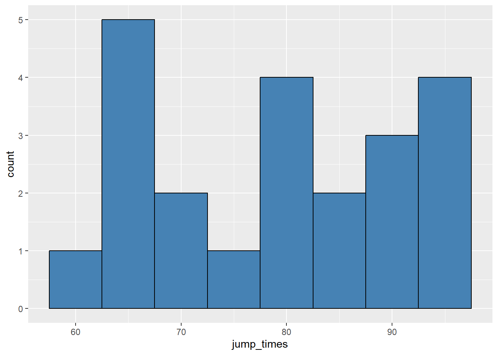
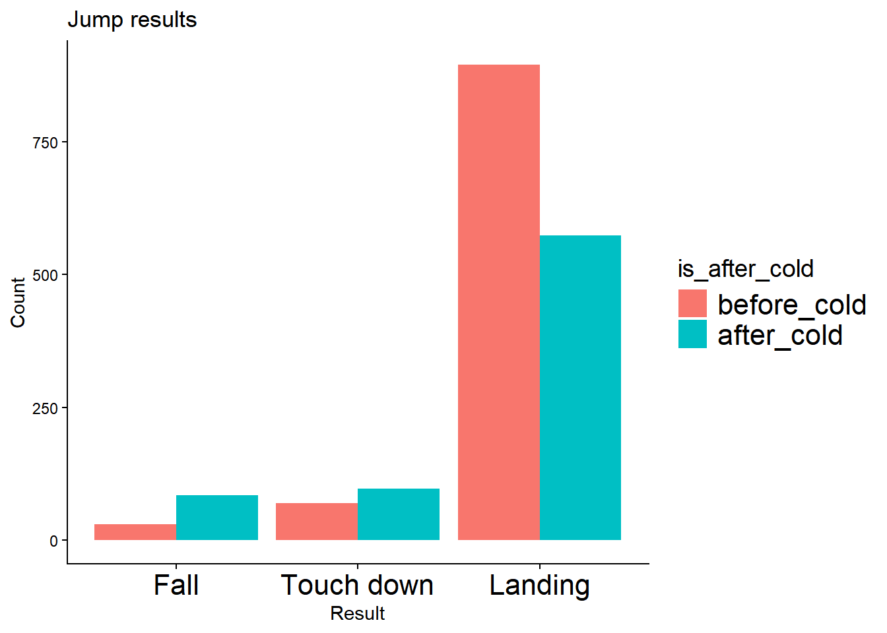
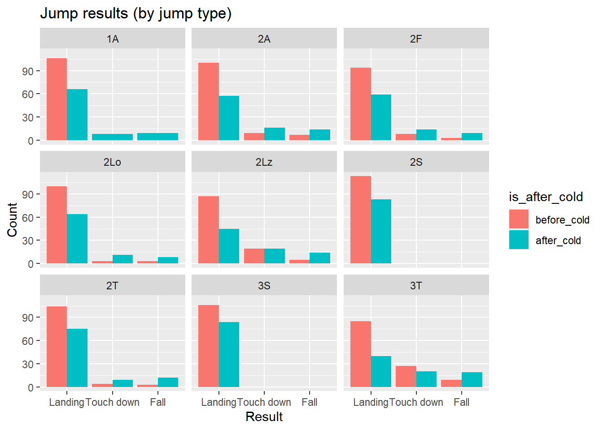
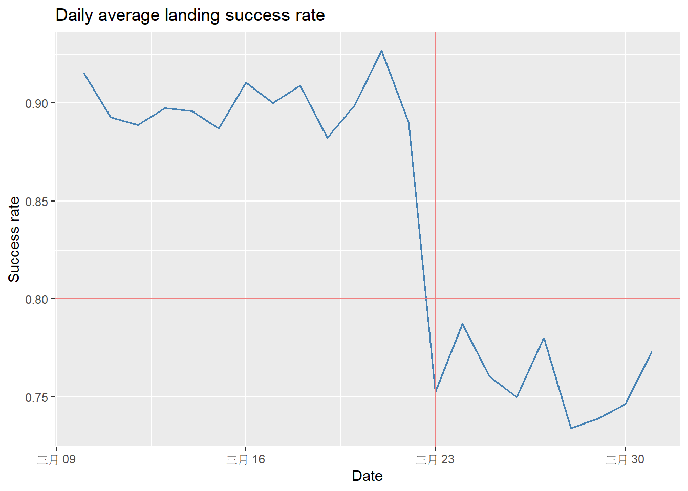
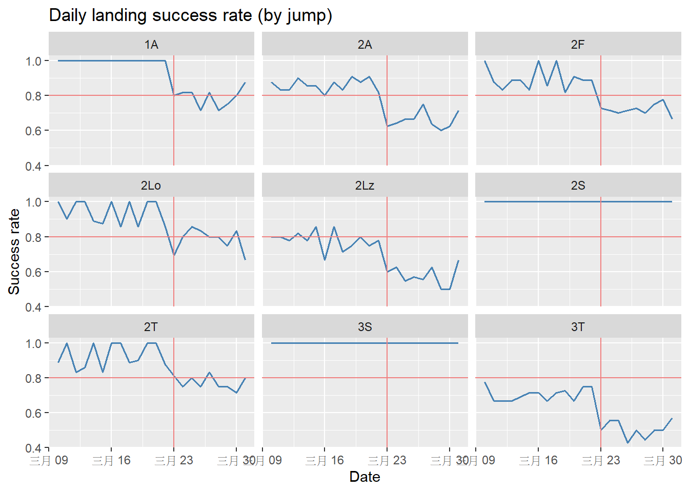

Inori is practicing for the Chubu Regional Championships, a figure skating competition in Japan. Her coach, Tsukasa, records the result of each jump attempt every day during practice. The dataset contains:
date: The date of the practice session.jump: The type of figure skating jump.result: The landing outcome of the jump attempt.On March 23, Inori caught a mild cold, and Tsukasa noticed that her landing performance seemed to be affected. Follow the instructions below to help Tsukasa test this hypothesis.
Before you begin, complete the setup:
.Rproj (if you do not have one, create it).medalist.csv and save it in the data folder. (right click here)tidyverse.output folder inside the project folder.Read medalist.csv and save it as medalist_raw.
Create a variable called cold_date equal to 2026-03-23 as a Date.
Create a new dataframe called medalist_tidy from medalist_raw with the following columns:
date column to Date type using as.Date().is_landing column: 1 if the jump result is Landing, otherwise 0.result column type into factor with level order: Fall, Touch down, Landing.is_after_cold column: "before_cold" if the date is before Inori’s cold, otherwise "after_cold".is_after_cold column type into factor with level order: before_cold, after_cold.In steps 4-5, we create a histogram to show the distribution of how many jump Inori did each day.
medalist_daily that summarizes how many jumps Inori did each day.Calculate the number of rows in each group date using summarise(jump_times = n())
medalist_hist_plot that shows the distribution of jump_times and print it with the settings: binwidth = 5, fill = "steelblue", color = "black".In steps 6-7, we create a bar plot to compare the performance of Inori’s jump by calculate the count of the jumping results before and after the cold.
Make a bar plot called medalist_bar_plot and print it with the settings:
resultis_after_coldJump results, x Result, y Count.Make a faceted bar plot by jump called medalist_facet_bar_plot with setting in Step 6 with title, Jump results (by jump type).
In steps 8-10, we create a line graph to compare the performance of Inori’s jump by calculate the landing success rate of the jumps before and after the cold.
Make a line plot called medalist_line_plot showing daily average landing success rate and print it with the settings:
linewidth = 0.7, color = "steelblue".cold_date in color lightcoral.y = 0.8 in color lightcoral."Daily average landing success rate", x "Date", y "Success rate".Create a dataframe medalist_success_rate_by_date_jump that summarizes the average landing success rate per jump each at each date.
Make a faceted line plot by jump called medalist_facet_line_plot using medalist_success_rate_by_date_jump and print it with the settings:
linewidth = 0.7, color = "steelblue".cold_date in color lightcoral.y = 0.8 in color lightcoral."Daily landing success rate (by jump)", x "Date", y "Success rate".Save all five plots into an output folder as png files using ggsave() with the settings: width = 12, height = 8, dpi = 300. Additionally, save an extra graph medalist_facet_line_plot_dpi150 for medalist_facet_line_plot with setting width = 12, height = 8, dpi = 150. Do you see the differences between these two graphs?
Based on your plots, answer the questions:
cold_date?library(tidyverse)
cold_date <- as.Date("2026-03-23")
medalist_raw <- read.csv("data/medalist.csv")
medalist_tidy <- medalist_raw %>%
mutate(date = as.Date(date)) %>%
mutate(is_landing = if_else(result == "Landing", 1, 0)) %>%
mutate(result = factor(result, levels = c("Fall", "Touch down", "Landing"))) %>%
mutate(is_after_cold = if_else(date < cold_date, "before_cold", "after_cold")) %>%
mutate(is_after_cold = factor(is_after_cold, levels = c("before_cold", "after_cold")))
medalist_daily <- medalist_tidy %>%
group_by(date) %>%
summarise(jump_times = n())
medalist_hist_plot <- medalist_daily %>%
ggplot(aes(x = jump_times)) +
geom_histogram(binwidth = 5,
fill = "steelblue",
color = "black")
print(medalist_hist_plot)
medalist_bar_plot <- medalist_tidy %>%
ggplot(aes(x = result, fill = is_after_cold)) +
geom_bar(position = "dodge") +
labs(title = "Jump results", x = "Result", y = "Count")
print(medalist_bar_plot)
medalist_facet_bar_plot <- medalist_tidy %>%
ggplot(aes(x = result, fill = is_after_cold)) +
geom_bar(position = "dodge") +
facet_wrap(~ jump) +
labs(title = "Jump results (by jump type)", x = "Result", y = "Count")
print(medalist_facet_bar_plot)
medalist_line_plot <- medalist_tidy %>%
ggplot(aes(x = date, y = is_landing)) +
geom_line(stat = "summary",
fun = "mean",
linewidth = 0.7,
color = "steelblue") +
geom_vline(xintercept = cold_date, color = "lightcoral") +
geom_hline(yintercept = 0.8, color = "lightcoral") +
labs(title = "Daily average landing success rate",
x = "Date", y = "Success rate")
print(medalist_line_plot)
medalist_success_rate_by_date_jump <- medalist_tidy %>%
group_by(date, jump) %>%
summarise(success_rate = mean(is_landing)) %>%
ungroup()
medalist_facet_line_plot <- medalist_success_rate_by_date_jump %>%
ggplot(aes(x = date, y = success_rate)) +
geom_line(linewidth = 0.7,
color = "steelblue") +
geom_vline(xintercept = cold_date, color = "lightcoral") +
geom_hline(yintercept = 0.8, color = "lightcoral") +
facet_wrap(~ jump) +
labs(title = "Daily landing success rate (by jump)",
x = "Date", y = "Success rate")
print(medalist_facet_line_plot)
ggsave(filename = "medalist_hist_plot.png",
plot = medalist_hist_plot,
path = "output",
width = 12,
height = 8,
dpi = 300)
ggsave(filename = "medalist_bar_plot.png",
plot = medalist_bar_plot,
path = "output",
width = 12,
height = 8,
dpi = 300)
ggsave(filename = "medalist_facet_bar_plot.png",
plot = medalist_facet_bar_plot,
path = "output",
width = 12,
height = 8,
dpi = 300)
ggsave(filename = "medalist_line_plot.png",
plot = medalist_line_plot,
path = "output",
width = 12,
height = 8,
dpi = 300)
ggsave(filename = "medalist_facet_line_plot.png",
plot = medalist_facet_line_plot,
path = "output",
width = 12,
height = 8,
dpi = 300)
ggsave(filename = "medalist_facet_line_plot_dpi150.png",
plot = medalist_facet_line_plot,
path = "output",
width = 12,
height = 8,
dpi = 150)



